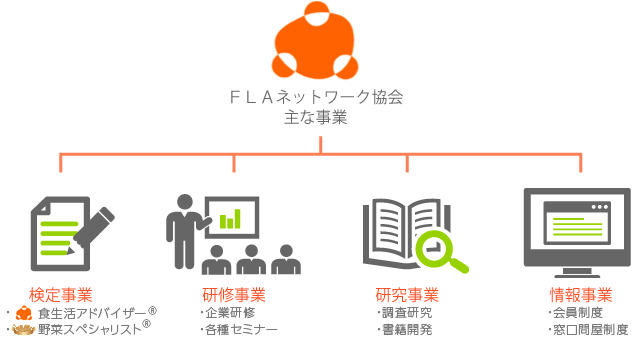
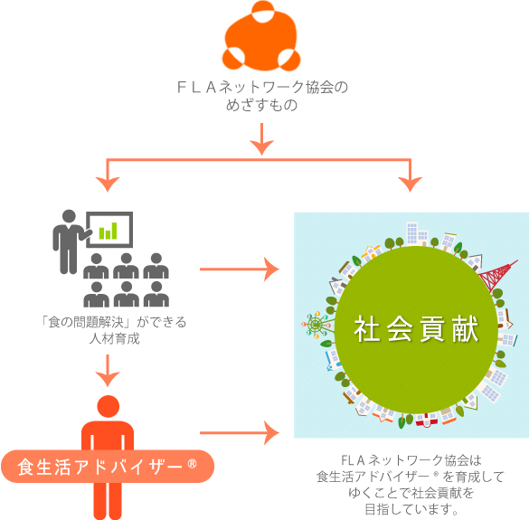

協会情報
FLAネットワーク協会とは
ＦＬＡネットワーク協会は、食生活アドバイザー® 検定に関する事業をはじめとした、「食」と「生活」にかかわるさまざまな事業を展開しています。

ＦＬＡ（Food&Lifestyle Adviser）ネットワーク協会は自分のライフスタイルを自ら考え、自ら創造し、そして実践できる人材を育てることを目的に、組織されました。「食生活アドバイザー®」は単に「食」に関連したことのみのアドバイザーではなく、自己責任時代の生き方や働き方、そして食へのこだわりをそれぞれの立場にあった視点でアドバイスできる人のことです。そういう、いわばミールソリューションができる人材を育成し社会に貢献していくことをＦＬＡネットワーク協会の活動の目標としております。

商標登録について
「食生活アドバイザー®」「食アド®」「野菜スペシャリスト®」「野スぺ®」はFLAネットワーク協会が使用権を有する登録商標です。
ロゴマークについて
三つの丸は「人」「食」「生活」を表し、同時に形態的に「人」の文字を表現することで「人の結びつき」が基本であることを示しています。また、この三つの丸が囲む有機的な楕円は、食卓をイメージしながら「コミュニケーション」と「ライフスタイル」をシンボリックに表現しています。
一般社団法人 ＦＬＡネットワーク協会
〒160-0023 東京都新宿区西新宿7-15-10 大山ビル2F
- 食生活アドバイザー® 検定事務局
-
0120-86-3593
03-3371-3593
月曜日～金曜日 AM 9:00 ～ PM 5:00 （ 土日祝日 除く）